Math Models of Operations Research, MATP 4700.
First Exam, Tuesday, October 5, 2021.
Solutions to Version C
You may use one sheet of handwritten notes, but no other sources. No calculators are allowed. The exam
consists of eight questions, and lasts one hundred and ten minutes.
-
1.
- (10 points; each part is worth 5 points) Characterize each of the following linear optimization problems as
either infeasible or having a finite optimal value or having an unbounded optimal value. (Hint: draw the
problems.)
-
(a)
-
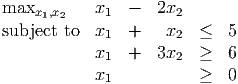
-
(b)
-
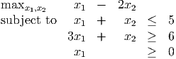
Solution: Note that x2 is free in these 2 problems. The feasible region in (b) is unbounded, whereas that for
(a) is bounded. In (b), one ray is d = (1,-1): Note that x = t(1,-1)T is feasible for t ≥ 3, and the objective
function value goes to -∞ along this ray.
-
2.
- (9 points; 3 points for each correct answer, lose one point for each incorrect answer.) For each part, either
the statement is always true or there exists a counterexample to the statement. If the statement is always
true, circle TRUE, otherwise circle FALSE.
-
(a)
- Given a linear program in canonical form, if we pivot using the simplex rule, then a strict
decrease in the objective function value is obtained.
-
(b)
- If a linear program has a unique optimal solution, that optimum must occur at an extreme point
of the feasible region.
-
(c)
- If a canonical form tableau is not in optimal form then the corresponding basic feasible solution
is not optimal.
Solution:
For the last part, we could have a degenerate optimal solution with a tableau that is not in optimal
form.
-
3.
- (12 points) Consider the linear optimization problem
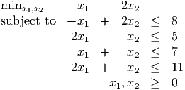
For each of the following points, determine whether it is a basic feasible solution, whether it is a degenerate
basic feasible solution, and whether it is feasible.
-
(a)
- (0, 4)
-
(b)
- (4, 3)
-
(c)
- (2, 5)
-
(d)
- (5, 1)
Solution:
We check the slacks for the 4 points:

The two nondegenerate BFS have exactly 2 zero components when we put the problem into standard
form.
-
4.
- (15 points; each part is worth 5 points.)
The following tableau represents a linear program in standard form:
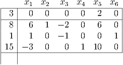
-
(a)
- Give an optimal basic feasible solution x to this linear program.
-
(b)
- Find another optimal basic feasible solution 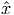.
-
(c)
- Find a direction d so that x + td is optimal for any t ≥ 0.
Solution:
(a): Read the BFS off the tableau.
(b): Pivot to bring x1 into the basis. x6 leaves the basis.
(c): Can also increase x3 without changing the objective function value. The required d is the corresponding
simplex direction.
-
5.
- (9 points; each part is worth 3 points) Consider the following canonical form tableau:
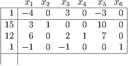
-
(a)
- What is the updated objective function value if we use a simplex pivot to bring x1 into the
basis?
-
(b)
- What is the updated objective function value if we use a simplex pivot to bring x5 into the
basis?
-
(c)
- What is the pivot matrix if we bring x5 into the basis?
Solution:
The first two parts of this problem are asking you to find the best improvement pivot. You need only report
the new value of the negative of the entry in the top left corner.
To find the pivot matrix, we “do unto the 4 × 4 identity what we would do to the tableau”.
-
6.
- (20 points; each part is worth 4 points.) Consider the following tableau corresponding to a standard form
linear optimization problem:
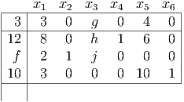
-
(a)
- Assume f = 0. Give necessary and sufficient conditions on g, h, j so that the next simplex pivot
replaces x4 with x3 in the basis.
-
(b)
- Assume f > 0. Give necessary and sufficient conditions on g, h, j so that the next simplex pivot
replaces x4 with x3 in the basis.
-
(c)
- Give necessary and sufficient conditions on f, g, h, j for the tableau to be in unbounded form.
-
(d)
- Assume 12 -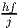 ≥ 0. Give necessary and sufficient conditions on f, g, h, j for the tableau to be
infeasible.
-
(e)
- Give necessary and sufficient conditions on f, g, h, j for the tableau to be in optimal form.
Solution:
For (a) and (b), need to pivot in the x3 column, so need g < 0. Also need the first row to win the minimum
ratio test, so need h > 0. In (a), we need j ≤ 0. In (b), this requires either j ≤ 0 or 0 < j < 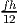. Note that we
can say this condition on j more compactly as j < 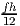.
You need to state f ≥ 0 in parts (c) and (e).
For part (d): if f ≥ 0 then the problem is feasible for any choice of g,h,j. If f < 0 then the problem is
infeasible if j ≥ 0. Note that if j < 0 then the problem is feasible: can pivot on j and get a tableau in
canonical form because of the condition 12 -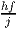 ≥ 0.
-
7.
- (5 points) When the method of artificial variables is applied to the standard form linear optimization
problem
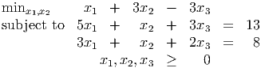
an optimal tableau in Phase I is:
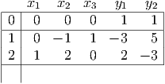
What is the reduced cost for x2 in the initial canonical form tableau for Phase II?
Solution:
Initial tableau for Phase II is
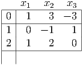
Pivoting to canonical form gives
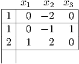
-
8.
- (20 points; each part is worth 5 points)
-
(a)
- The variables in the following linear programming problem have upper bounds:
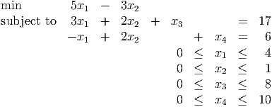
The current basic feasible solution has x1 and x2 both nonbasic at their upper bounds. What are the
values of the basic variables at the current BFS?
-
(b)
- The variables in the following linear programming problem have upper bounds:

The current basic feasible solution has x1 and x2 both nonbasic at their upper bounds. The basic
variables have values x3 = 20, x4 = 2, x5 = 2.
-
i.
- Which variable should enter the basis?
-
ii.
- What is the corresponding simplex direction?
-
iii.
- Which variable should leave the basis?
Solution:
(a) x3 = 17 - 3x1 - 2x2 = 3, x4 = 6 + x1 - 2x2 = 8.
(b) (i) x1 and x2 are both at their upper bounds, and a candidate to enter the basis is a variable at upper
bound with positive reduced cost. Thus, x1 enters the basis.
(ii) We use the simplex direction. Note that the incoming variable decreases. So d = (-1, 0,-2, 3,-1)T .
(iii) Let x be the current point. Need 0 ≤ x + td ≤ u, so:
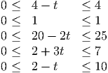
The crucial value is t = 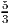, and the first bound achieved is the upper bound for x4.
 = (1, 2, 0, 18, 0, 0)T (c) d = (0, 2, 1, 0, 0, 1)T
= (1, 2, 0, 18, 0, 0)T (c) d = (0, 2, 1, 0, 0, 1)T